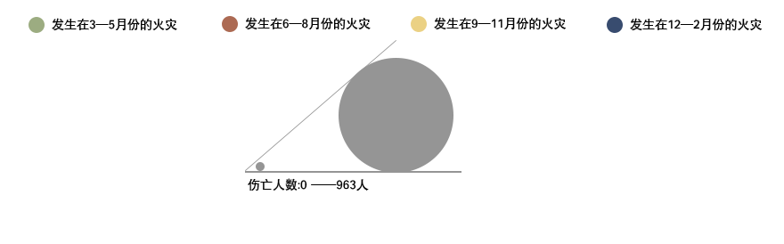

住 宅
工 厂
公共场所
十年来，中国大地上一幢幢高楼大厦拔起，一条条道路纵横交错，车流不息，灯火辉煌。这一丛丛一簇簇的灯光，却也带来 了巨大的安全隐患。
不当使用电气已成为引发亡人火灾的首要原因，所占比重越来越大，从2009年的25.8%逐渐上升到2016年的30.1%。 该类火灾易造成群死群伤，亡10人以上的46起重特大火灾中就有26起是电气起火。
我国平均每天约有4个人死于火灾，其中有81%的死者在消防队到场前就已经死亡。即使随时随地都有面对浓烟烈火的 可能性，我们是否曾经挤出过那么一点点的时间去了解和思考，还是任凭自己淹没在现代文明的繁华中？
新华网联合应急管理部消防救援局整理分析了近十年火灾数据，以散点图聚合形式展现其分布特点。下图每一个点代表了一起较大或者重特大火灾。
每当看到窗户里亮起的灯和飘来的饭香，在外奔波的我们绷着的心总会不由地变得柔软， 因为那是家，是个可以卸下所有防备的地方。然而也正因为我们对家庭防火的掉以轻心， 使得家也变得危险起来。
所有建筑火灾中，住宅火灾造成的人员伤亡远高于其他类型的建筑火灾。特别是近些年， 社会企事业单位的火灾问题在各级公安消防部门的监督治理下得到有效遏制，这样一来， 住宅火灾问题尤为凸显。从2008年到2017年中发生的782起较大及重特大火灾中，住宅火灾多达526起， 伤亡人数高达2564人。2016年，我国因火灾死亡的人员中，八成死于住宅起火， 远远高于2007年的66.7%。
住宅较大以及重特大火灾中，夜间火灾发生频率最高。夜间住宅火灾占总体的77%， 伤亡人数达1885人。
夜间突然被惊醒的人们，因没有进行足够的消防演习训练， 大脑还处于混沌的状态，在仓促逃生期间很难采取正确的逃生措施，使得夜间遇难者比重加大。 夜间最是人们防范意识薄弱的时候，古时每晚有更夫敲着锣叫唤“天干物燥，小心火烛”便是这个道理。
2016年大年初八，一场凌晨的大火打破了成都邛崃街头的祥和宁静。2时40分，邛崃市临邛街道办事 处东街267号何家大院居民房发生火灾，往日的四合院面目全非。起火原因为生活用火不慎引燃周围可燃物， 四合院为连片砖木结构房屋，建筑密度大，使得火势蔓延迅速；且整个住房唯一出口在火灾中被堵截， 加之居住人群缺乏火场逃生疏散、家庭灭火等常识，使得这场大火夺走了5个鲜活的生命。
正如成都邛崃何家大院这场火灾，近四成的住宅较大以及重特大火灾发生在冬天。
冬季重大节日较集中，人流物流加快，使得火灾发生概率大大提高；而且冬季气候干燥， 火险等级较高，特别是农村村寨和城镇依然建筑密集处，极易造成“火烧连营”的状况。 2013年发生在甘肃省甘南藏族自治州迭部县腊子口乡黑多村的一场火灾，造成92户、 420人受灾，直接财产损失2167万元，起因村民张某家的烟囱喷出的火星引燃柴草； 冬季气候严寒，各大“取暖神器”展露手脚，却易造成短路、负荷等情况，从而引发电气火灾。
科学技术发达的今天，我们每天都穿梭在庞大而又复杂的 “人造”环境中。不论是人头攒动 商场还是案牍劳形的写字楼，无一例外都被人工材料包裹着。而大多数这些人工材料都是可 燃物，只要一个零星的火苗，便有可能带来一场火灾，而这个火苗，很可能来自一枚未熄灭的烟头。
吸烟引发火灾是公共场所较大以及重特大火灾的一个特点，平均每起吸烟引起的火灾的伤亡人 数为9人。从亡人火灾来看，吸烟引发火灾亦是一个突出特点。天津、新疆、北京、内蒙古、 辽宁因吸烟引发的亡人火灾皆达到了总体的20%。特别是天津，超过三成的亡人火灾由吸烟引起， 竟超过了电气和用火不慎的总和
2017年12月1日4时1分,天津市河西区友谊路，正在施工的君谊大厦1号楼发生火灾，起火原 因便是因为遗留烟蒂等火源引燃堆放在38层电梯间内的杂物和废弃装修材料。而由于施工企业 为施工方便擅自放空消防水箱贮存用水，致使消防设施未能发挥作用，火势迅速扩大。大火持 续燃烧超过2小时，酿成了10人死亡、5人受伤，直接财产损失约1081万元的惨剧。
沿海一带，灯火璀璨，尤其是珠三角和长三角地区。其中广东、江苏、山东、浙江GDP常年位 列全国的前4位。在车水马龙的背后，却隐藏着一场场噬人的烈火和一条条鲜活的生命。
沿海省份是中国的经济活跃区，大量的生产、储存场所散落其中，成批的外来人员熙熙攘攘 而至，不计其数的机器不停歇地运作。在生产、储存场所发生较大火灾以及重特大火灾的共有 26个省份中，其中有10个为沿海省份。74起在生产、储存场所火灾中有47起发生在这10个沿 海城市，造成的伤亡人数占所有的76%，财产损失更是占到了93%。
2008年2月27日深夜，广东省深圳市南山区的龙飞再生物资回收有限公司的车间依然灯火通明， 机器轰隆，一派热火朝天的劳作场景。凌晨4时，超负荷运转的压缩塑料机器电线短路。在火舌狂 妄肆意地吞噬着整个工厂时，阁楼上还有15人正在熟睡，再也没有醒来。此次事故造成15人死亡， 3人受伤，直接财产损失达927.7万。
一个晚上，火灾就带走了15个人的生命。虽然发生在夜间的生产、储存场所火灾次数不多，但 其平均每起的伤亡人数高达白天平均伤亡人数的两倍（工厂较大及重特大）。夜晚在厂房工作的 人员容易精神疲惫，监管力度欠佳，造成发现火情晚，扑灭不及时，逃生秩序混乱的现象，使得 夜间厂房、仓储场所火灾伤亡人数骤升。
2008年——2017年工厂类较大及重特大火灾查询盘
请点击任意区块进行查询，点击中间蓝色区域便可返回上一层
伤亡：伤亡人数
起数：在2008—2017年期间各省份所发生的工厂类较大及重特大火灾总起数
平均GDP：2008—2017年期间各省份的平均GDP排名
这一串串触目惊心的数字也正展现了我国许多居民消防逃生意识薄弱的现状。住宅火灾中60% 都是的死者在卧室内死亡，甚至有4003人在床上死亡，说明遇难者无明显逃生行为。另有5421人 是因为吸入有毒烟气后窒息中毒死亡。
相较于现代人薄弱的消防意识，古人却是早已十分重视防火逃生意识。早在东汉，荀悦就 已在《申鉴·杂言》中提出较为完善的防火理论：“先其未然谓之防，发而止之谓之救，行而责 之谓之戒。防为上，救次之，戒为下。”在民间，每晚有穿着马褂的更夫提醒各家各户夜晚小心 火烛；在宫中，每到春秋便有宫正摇动木铎提醒防火。
而我们的消防意识又是多少呢？
让我们来问自己几个问题：
是否熟知并走过住宅以及工作场所的消防逃生通道？
是否知道如何给电动自行车充电才是安全规范的？
是否每到一个陌生环境会第一时间留意逃生指示？
是否知道如何正确使用灭火器？
回答完寥寥几个问题，每个人内心都对自己的消防意识或多或少有了一个大概的认识。如果我 们多知道一点，就能降低火灾发生的概率；如果我们多了解一点，就能为自己和施救人员争取宝 贵的时间；收起我们的漠视，为 “逆行”在火场的消防员减少几分阻力。